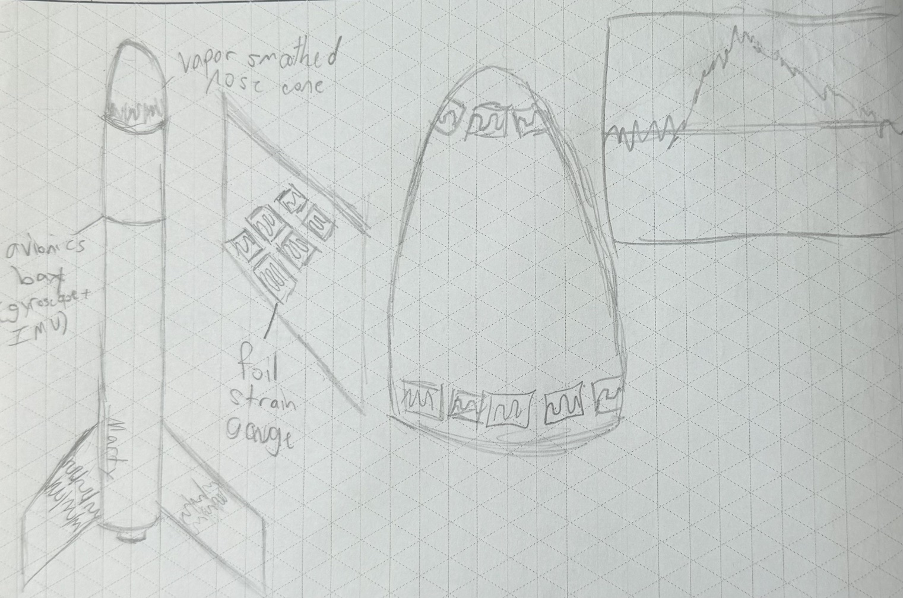
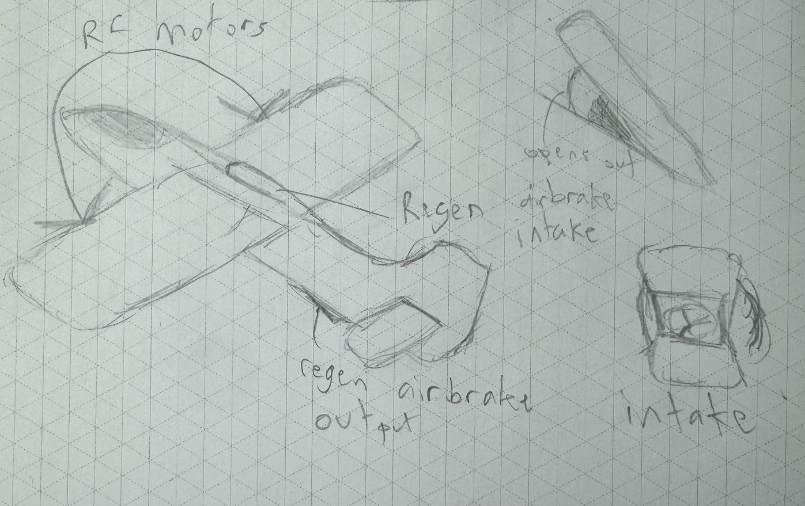
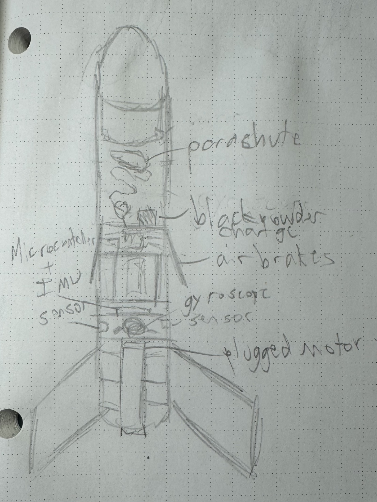

Final Project
I make rockets
Rocket Airframe Sensor Fusion
Using foil strain gauges, we would test the strain on various materials when used for model rocket fins and nosecones or potentially RC plane wings. We could combine the data from the strain gauges with various other sources to create a digital twin of a rocket.

Regenerative Air Braking
The idea here is to regain potential energy as an RC plane stops accelerating forward based on the similar concept of regenerative braking in hybrid and electric vehicles. This would be a small scale prototype for a system that could possibly be used to conserve energy in larger aircraft.

Thrust Vector Control Rocket
For this, we would create a flight computer that uses many redundant sensors for attitude measurement, run them through a Kalman filter, then use a PID controller to angle an airbrake in the right way to slow down the rocket.
